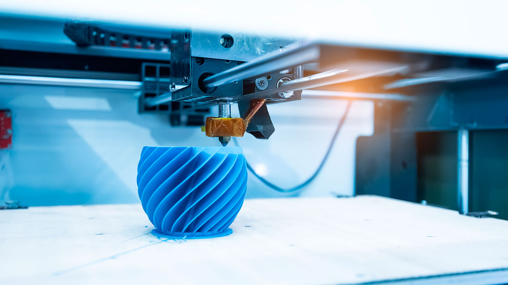

Innovation Lab
En el taller de Laboratorio de Investigación hemos desarrollado e investigado las nuevas tecnologías que vienen evoluciónando la manera en que las organizaciones trabajan y nuevos requisitos técnicos que se tienen que implementar por profesionales capacitados. Esto me lleva a reflexionar y pensar en cómo desarrollar nuestras habilidades humanas, estar preparados para adaptarnos al nuevo esquema, nos ayuda a no sucumbir ante el vertiginoso y volátil desarrollo tecnológico. Que la tecnología sea una ayuda, un apoyo para facilitarnos el trabajo, no para sustituirnos. En un mercado tan competitivo como el de hoy en día, los profesionales deben mantenerse actualizados, formándose constantemente y desarrollando nuevas habilidades, tener flexibilidad profesional. Esto me lleva a una de las herramientas que considero más importante, que complementa mi carrera hoy en día, poder diseñar webs, saber como diseñar con código. Saber programar te ofrece flexibilidad profesional y te abre las puertas a nuevas oportunidades de trabajo. Aprender a programar hace que tu perfil profesional sea más flexible, especialmente en una economía digital que evoluciona rápidamente. Programar te sirve para comunicarte con cualquier computadora, smartphone, tablet y dado que nos encontramos en un escenario en donde prácticamente estamos rodeados de ellos 24/7 entenderlo se convertirá en algo esencial para el futuro cercano.
Gisela Salas
ARDUINO 19 november, 2021
El proyecto Arduino tiene sus orígenes en el proyecto Wiring, el cual surge por el año 2003 como una herramienta para estudiantes en el Interaction Design Institute Ivrea en Ivrea, Italia,2con el objetivo de proporcionar una forma fácil y económica de que principiantes y profesionales crearan dispositivos que pudieran interactuar con su entorno mediante sensores y actuadores. La primera placa Arduino comercial fue introducida en el año 2005, ofreciendo un bajo costo económico y facilidad de uso para novatos y profesionales. Los diseños de las placas Arduino usan diversos microcontroladores y microprocesadores. Generalmente el hardware consiste de un microcontrolador Atmel AVR, conectado bajo la configuración de "sistema mínimo" sobre una placa de circuito impreso a la que se le pueden conectar placas de expansión (shields) a través de la disposición de los puertos de entrada y salida presentes en la placa seleccionada. Las shields complementan la funcionalidad del modelo de placa empleada, agregando circuiteria, sensores y módulos de comunicación externos a la placa original. La mayoría de las placas Arduino pueden ser alimentadas por un puerto USB o un puerto barrel Jack de 2.5mm. La mayoría de las placas Arduino pueden ser programadas a través del puerto serie que incorporan haciendo uso del Bootloader que traen programado por defecto. El software de Arduino consiste de dos elementos: un entorno de desarrollo (IDE) (basado en el entorno de processing y en la estructura del lenguaje de programación Wiring), y en el cargador de arranque (bootloader, por su traducción al inglés) que es ejecutado de forma automática dentro del microcontrolador en cuanto este se enciende. Las placas Arduino se programan mediante un computador, usando comunicación serie. Proyecto Arduino
IoT - Internet Of Things 07 January, 2022

¿Qué es IoT? La definición de IoT podría ser la agrupación e interconexión de dispositivos y objetos a través de una red (bien sea privada o Internet, la red de redes), dónde todos ellos podrían ser visibles e interaccionar. Respecto al tipo de objetos o dispositivos podrían ser cualquiera, desde sensores y dispositivos mecánicos hasta objetos cotidianos como pueden ser el frigorífico, el calzado o la ropa. Cualquier cosa que se pueda imaginar podría ser conectada a internet e interaccionar sin necesidad de la intervención humana, el objetivo por tanto es una interacción de máquina a máquina, o lo que se conoce como una interacción M2M (machine to machine) o dispositivos M2M. Términos muy relacionados con IoT pueden ser "Smart Cities" y "Smart Buildings" dónde se utilizan dispositivos de IoT para mejorar el control del tráfico, el control de los suministros de agua y calefacción en un edificio, el control del transporte público, etc. 5 Aplicaciones de la OIT
Impresión 3D 14 January, 2022
Es en 1983 cuando el norteamericano Charles W. Hull, más conocido como Chuck Hull, crea la primera pieza impresa en 3D mediante el proceso conocido como estereolitografía. Al año siguiente patentará la impresión mediante este sistema y en 1986 fundará su propia empresa, 3D Systems, la primera compañía de impresión 3D. la impresora 3D y todo lo que la rodea generará en 2022 unos 30.000 millones de dólares según un estudio del sector gracias a que se está implementando en la mayoría de industrias, cada vez está más cerca del alcance del público y la impresión 3D es cada vez más eficiente, más allá de su origen como creación de prototipos. El nombre estereolitografía, que recibe este sistema de impresión 3D, fue acuñado también por el propio Chuck Hull, una manera de diferenciar su proyecto de otros similares. Estereolitografía viene del griego. Por un lado, estéreo, del griego stéreos, que significa consistente o sólido, y litografía, que significa literalmente dibujo (del griego lithos) en piedra (del griego graphe), y que no es más que una técnica de impresión que consiste en realizar un dibujo en piedra para luego reproducirlo en papel. Como tal, la estereolitografía consiste en imprimir capa a capa lo que queremos reproducir empleando para ello polímeros que reaccionan a la luz y/o al calor endureciéndose. Según la explicación que se muestra en la patente de Hull, un haz de luz ultravioleta concentrado apunta a una cuba llena de un fotopolímero líquido, creando una capa del objeto 3D que queremos recrear. Otro detalle a tener en cuenta es que, aunque en el plano físico la impresión 3D se sustenta en el láser ultravioleta y las resinas o polímeros, en el plano digital se emplea el diseño asistido por computadora o CAD, ampliamente integrado en cualquier ámbito de diseño o prototipado industrial. Y si bien su propósito inicial era servir para crear de forma rápida prototipos, con el tiempo se vio su potencialidad para crear también objetos o piezas finales. Explora más en Tinkercad
Realidad Virtual 26 January, 2022
La realidad virtual (RV) muestra un entorno de escenas y objetos de apariencia real creado con tecnología informática que le ofrece al usuario la sensación de que está inmerso en él. Este entorno es observado por el usuario gracias a unas gafas o un casco de realidad virtual. Aunque es una tecnología relativamente nueva, hay quien considera que uno de los primeros dispositivos de realidad virtual se remonta a los años 50. En ese momento existía una máquina con asiento que reproducía películas en 3D y ofrecía vibraciones que hacían la experiencia más real. Si bien es cierto, que no tiene mucho que ver con lo que se conoce hoy como realidad virtual, si podría considerarse como el comienzo del desarrollo tecnológico que permite la realidad virtual. Cuando hablamos de realidad virtual es importante distinguirlo de la realidad aumentada. En la RV todo lo que observamos está construido de manera artificial y somos nosotros los que nos sumergimos en este mundo artificial. En la realidad aumentada es un nuestro entorno real el que se digitaliza y podemos colocar objetos dentro de nuestro entorno real. La realidad mixta es una combinación de ambas tecnologías, en la cual podemos ver objetos virtuales en el mundo real. La realidad virtual es una tecnología latente en nuestra sociedad hoy en día, por esto es un sector muy demandado. Esto lleva a que existan varios cursos online de nuevas tecnologías que preparan a los profesionales para llevar a cabo este tipo de tecnologías. El primer ejemplo que podemos ofrecer de realidad virtual es su aplicación en el mundo del entretenimiento. Gracias a la realidad virtual los usuarios pueden formar parte del escenario que ofrecen los videojuegos y ser ellos mismos los personajes de la historia. Su aplicación también está cobrando importancia en el mundo de la arquitectura , permitiendo a todos los equipos representar el espacio. Esto les ayuda a concebir el espacio y presentar el proyecto de una manera visual y clara a los clientes. En gastronomía existen algunos lugares que ofrecen la tecnología de realidad virtual para ofrecer una experiencia única a sus clientes. En el ámbito de la medicina también es utilizado para simular el cuerpo humano. Al recrear el cuerpo humano en 3D es más fácil elaborar un diagnostico y crear simulaciones de operaciones.
Realidad Aumentada 28 January, 2022
¿Qué es la Realidad Aumentada? La tecnología de Realidad Aumentada consiste en la integración de contenidos gráficos sobre una vista del mundo real. Para ello, se utilizan dispositivos como teléfonos móviles o gafas, que añaden la información virtual a la realidad que ve el usuario. En el caso de que se utilice un móvil, el resultado se muestra en la pantalla, aumentando el video que captura la cámara del teléfono. En el caso de utilizarse una gafa, la experiencia de Realidad Aumentada se muestra al usuario delante de sus ojos por medio de una imagen proyectada en la lente de la gafa, generándose un efecto muy similar a un holograma. En el año 1973, el artista informático Myron W. Krueger, creó la primera instalación de Realidad Aumentada que mezclaba cámaras de video con un sistema de proyección, para crear un entorno interactivo que respondía a los movimientos de los usuarios por medio de sombras y movimiento. Durante la década de los 90 se comenzaron a implementar aplicaciones muy interesantes que utilizaban el concepto de Realidad Aumentada para resolver problemas en ámbitos como la industria o el diseño. Cabe destacar a Tom Caudell, que acuñó el término “Realidad Aumentada” para describir una aplicación de apoyo al montaje de cableados eléctricos complejos. Aquí un ejemplo del METAVERSE
Inteligencia Artificial 2 february, 2022
En su forma más simple, la IA es el intento de imitar la inteligencia humana usando un robot, o un software. Pero es un concepto muy vago, porque existen muchas ramificaciones. Stuart Russell y Peter Norvig diferenciaron cuatro tipos en 2009. Estos fueron sistemas que piensan como humanos, como por ejemplo las redes neuronales artificiales. Sistemas que actúan como humanos, como los robots. Sistemas que usan la lógica racional, como los sistemas expertos, y sistemas que actúan racionalmente, como los agentes inteligentes. Seguir Leyendo
Revolución Industrial 4.0 4 february, 2022